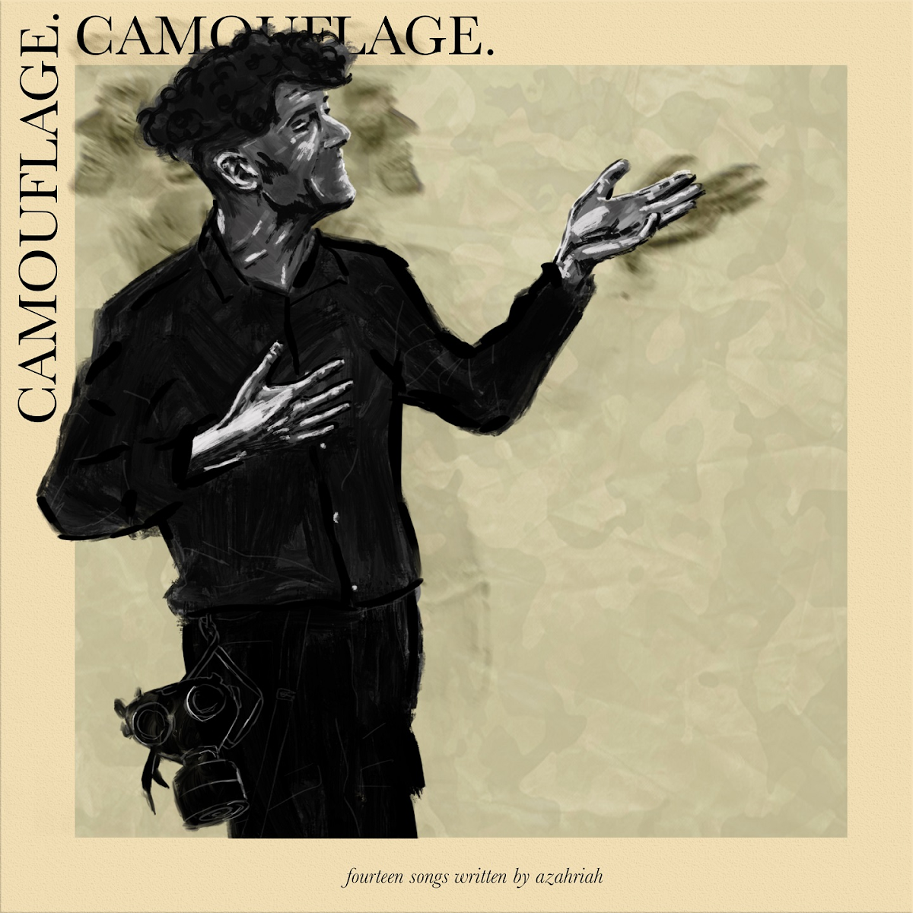
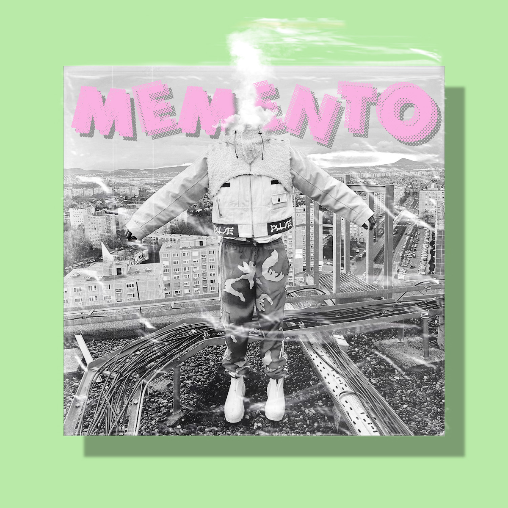
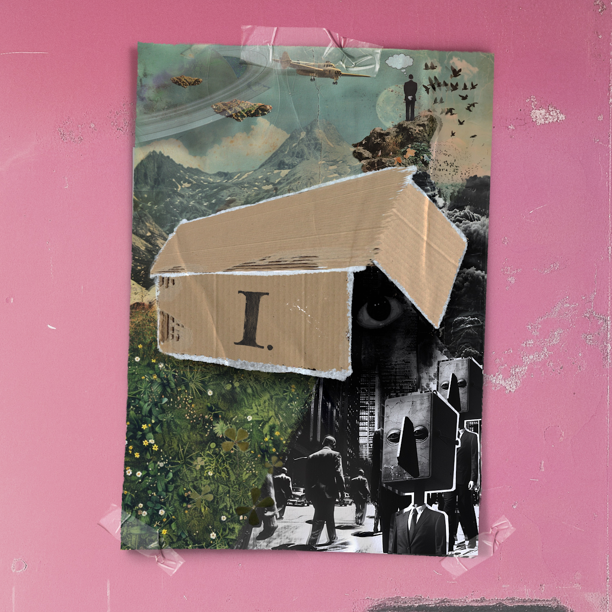

Nagylemezek
| Album címe |
Megjelenési év |
Zenék |
További információk |
Album borítója |
| I'm Worse |
2020 |
|
- 1. nagylemez
- Megjelenés: 2020. április 15.
- Szóló album
- A Toxic című szám már nem elérhető
|
 |
| Camouflage |
2021 |
|
- 2. nagylemez
- Megjelenés: 2021. június 29.
- Szóló album
- Legmagasabb helyezés (Album Top 40 slágerlista): 19.
|
 |
| A ló túloldalán |
2022 |
|
- 3. nagylemez
- Megjelenés: 2022. május 20
- Első közös Album DESH-sel
- Legmagasabb helyezés (Album Top 40 slágerlista): 1
- Minősítés: Platinalemez
|
|
| memento |
2023 |
|
- 4. nagylemez
- Megjelenés: 2023. május 1
- Szóló album
- Legmagasabb helyezés (Album Top 40 slágerlista): 1
|
 |
| skatulya I |
2024 |
|
- 5. nagylemez
- Megjelenés: 2024. április 18.
- Szóló album
- Legmagasabb helyezés (Album Top 40 slágerlista): 2
|
 |